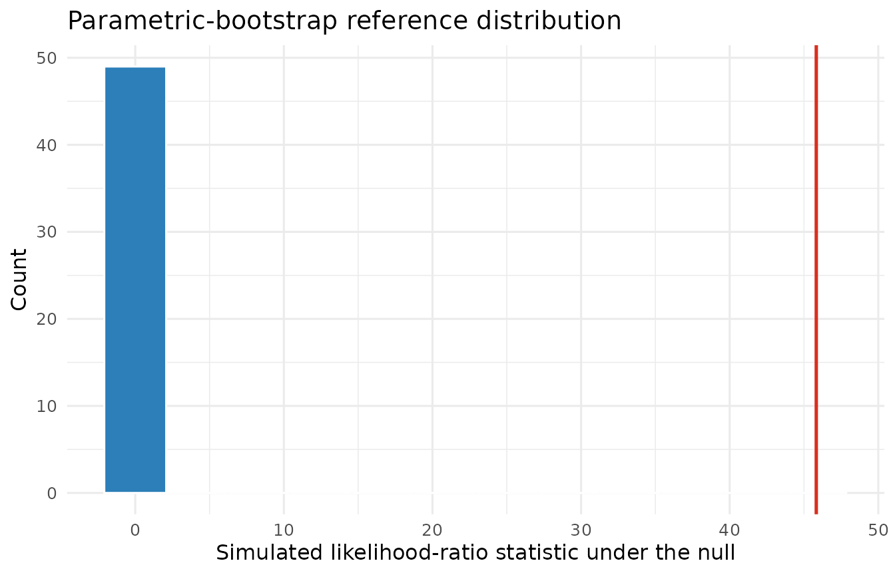

Covariance intervals and boundary-aware model comparisons
Source:vignettes/boundary-inference.Rmd
boundary-inference.RmdScope
This vignette covers two inferential questions that differ from inference on fixed effects:
- confidence intervals for variance and correlation parameters;
- likelihood-ratio comparisons when the null model can place a variance on the boundary at zero.
The usual chi-squared likelihood-ratio reference can fail at a boundary (Self and Liang 1987). A parametric bootstrap instead estimates the null distribution by simulating from the fitted smaller model and refitting both models to every simulated response (Davison and Hinkley 1997).
Confidence intervals for covariance parameters
The theta_ selector requests all covariance parameters.
Variance intervals are formed on the log scale, and correlation
intervals are formed on the Fisher-z scale. The delta-method standard
errors are transformed before the normal critical value is applied. This
keeps variance limits positive and correlation limits inside
(-1, 1).
orthodont <- as.data.frame(nlme::Orthodont)
fit <- lmm(
orthodont,
distance ~ age + Sex,
random = ~ age | Subject
)
confint(fit, parm = "theta_")
#> Lower Upper
#> random.var.(Intercept) 1.86157472 32.8778858
#> random.var.age 0.01051166 0.2500562
#> random.cor.age.(Intercept) -0.95415621 -0.1431681
#> residual.var 1.17693860 2.5025388The default confint(fit) remains backward compatible and
returns only fixed effects. Use parm = c("beta_", "theta_")
to request both families. These are local Wald intervals based on the
observed likelihood Hessian. They should not be interpreted as
profile-likelihood or bootstrap intervals, especially when the Hessian
is poorly conditioned or an estimate is close to a boundary.
Parametric-bootstrap likelihood-ratio test
The following comparison asks whether the Orthodont data support a random subject intercept beyond an independent Gaussian residual model. Both models are fitted by ML because covariance-model likelihood-ratio comparisons must use the same fixed effects under ML.
null_fit <- lmm(
orthodont,
distance ~ age + Sex,
method = "ML"
)
random_fit <- lmm(
orthodont,
distance ~ age + Sex,
random = ~ 1 | Subject,
method = "ML"
)The ordinary call retains the asymptotic chi-squared reference and emits a boundary warning. The bootstrap alternative is requested explicitly.
asymptotic <- suppressWarnings(anova(null_fit, random_fit))
bootstrap <- anova(
null_fit,
random_fit,
test = "parametric.bootstrap",
nsim = 49,
seed = 20260714
)
data.frame(
method = c("asymptotic chi-squared", "parametric bootstrap"),
statistic = c(asymptotic$Chisq[2], bootstrap$Chisq[2]),
p_value = c(asymptotic$p.value[2], bootstrap$p.value[2])
)
#> method statistic p_value
#> 1 asymptotic chi-squared 45.82714 1.291618e-11
#> 2 parametric bootstrap 45.82714 2.000000e-02For each simulation, lmmix draws a Gaussian response
using the fitted mean and marginal covariance of the null model, refits
both models by ML, and recomputes the likelihood-ratio statistic. The
finite-simulation correction is
The simulated null distribution is retained as an attribute for diagnostics.
bootstrap_statistics <- attr(bootstrap, "bootstrap")[[2]]$statistics
ggplot(
data.frame(statistic = bootstrap_statistics),
aes(x = statistic)
) +
geom_histogram(bins = 12, color = "white", fill = "#2C7FB8") +
geom_vline(
xintercept = bootstrap$Chisq[2],
color = "#D7301F",
linewidth = 0.9
) +
labs(
x = "Simulated likelihood-ratio statistic under the null",
y = "Count",
title = "Parametric-bootstrap reference distribution"
) +
theme_minimal(base_size = 12)
The 49 simulations above keep the installed vignette reasonably fast
and give a p-value resolution of 1 / 50. They are a
reproducible demonstration, not a publication-grade Monte Carlo
analysis. For substantive inference, increase nsim,
commonly to at least 999, and examine the retained distribution and the
number of successful refits. The returned p-value uses only successful
refits and the method warns if any refit fails.
Reproducibility
Supplying seed makes the simulated reference
distribution reproducible and restores the caller’s random-number state
on exit. Omitting seed uses and advances the current R
random-number stream. The fitted objects, simulation count,
successful-refit count, and simulated statistics remain available in the
returned comparison object.
sessionInfo()
#> R version 4.6.1 (2026-06-24)
#> Platform: x86_64-pc-linux-gnu
#> Running under: Ubuntu 24.04.4 LTS
#>
#> Matrix products: default
#> BLAS: /usr/lib/x86_64-linux-gnu/openblas-pthread/libblas.so.3
#> LAPACK: /usr/lib/x86_64-linux-gnu/openblas-pthread/libopenblasp-r0.3.26.so; LAPACK version 3.12.0
#>
#> locale:
#> [1] LC_CTYPE=C.UTF-8 LC_NUMERIC=C LC_TIME=C.UTF-8
#> [4] LC_COLLATE=C.UTF-8 LC_MONETARY=C.UTF-8 LC_MESSAGES=C.UTF-8
#> [7] LC_PAPER=C.UTF-8 LC_NAME=C LC_ADDRESS=C
#> [10] LC_TELEPHONE=C LC_MEASUREMENT=C.UTF-8 LC_IDENTIFICATION=C
#>
#> time zone: UTC
#> tzcode source: system (glibc)
#>
#> attached base packages:
#> [1] stats graphics grDevices utils datasets methods base
#>
#> other attached packages:
#> [1] ggplot2_4.0.3 lmmix_0.3.0
#>
#> loaded via a namespace (and not attached):
#> [1] Matrix_1.7-5 gtable_0.3.6 jsonlite_2.0.0
#> [4] dplyr_1.2.1 compiler_4.6.1 tidyselect_1.2.1
#> [7] jquerylib_0.1.4 systemfonts_1.3.2 scales_1.4.0
#> [10] textshaping_1.0.5 yaml_2.3.12 fastmap_1.2.0
#> [13] lattice_0.22-9 R6_2.6.1 labeling_0.4.3
#> [16] generics_0.1.4 knitr_1.51 tibble_3.3.1
#> [19] desc_1.4.3 bslib_0.11.0 pillar_1.11.1
#> [22] RColorBrewer_1.1-3 rlang_1.3.0 cachem_1.1.0
#> [25] xfun_0.60 fs_2.1.0 sass_0.4.10
#> [28] S7_0.2.2 otel_0.2.0 cli_3.6.6
#> [31] pkgdown_2.2.1 withr_3.0.3 magrittr_2.0.5
#> [34] digest_0.6.39 grid_4.6.1 nlme_3.1-169
#> [37] lifecycle_1.0.5 vctrs_0.7.3 evaluate_1.0.5
#> [40] glue_1.8.1 numDeriv_2016.8-1.1 farver_2.1.2
#> [43] ragg_1.5.2 rmarkdown_2.31 tools_4.6.1
#> [46] pkgconfig_2.0.3 htmltools_0.5.9